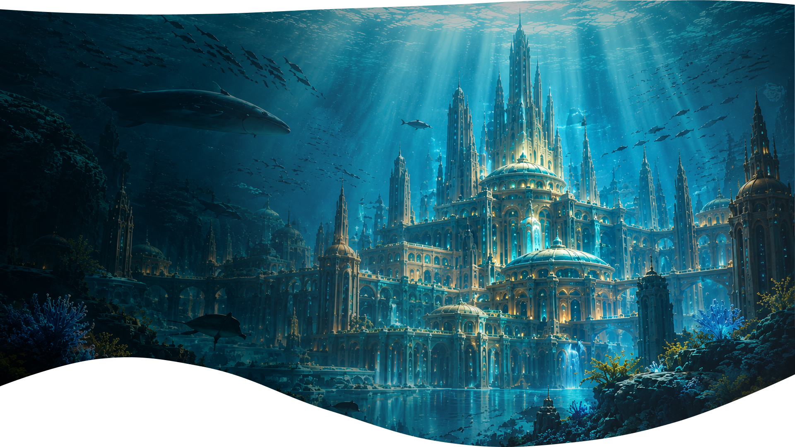

BEM-VINDO A
ONDE TECNOLOGIA,
ATLÂNTIDA
ONDE TECNOLOGIA,
NATUREZA E GENTE SE
CONECTAM
O portal dos moradores de Atlântida. Aqui você conhece seus vizinhos, conversa com outras cúpulas, pede ou oferece ajuda e acompanha os avisos da cidade, para que ninguém fique isolado no fundo do oceano.
EXPLORE
A Civilização
O MUNDO
Como a cidade nasceu e como se vive no fundo do mar
HABITANTES
Conheça as pessoas que vivem em Atlântida
MURAL
Avisos, pedidos e ofertas de ajuda da comunidade
FALE COM O
PORTAL
Peça ajuda, cadastre-se ou fale com a administração